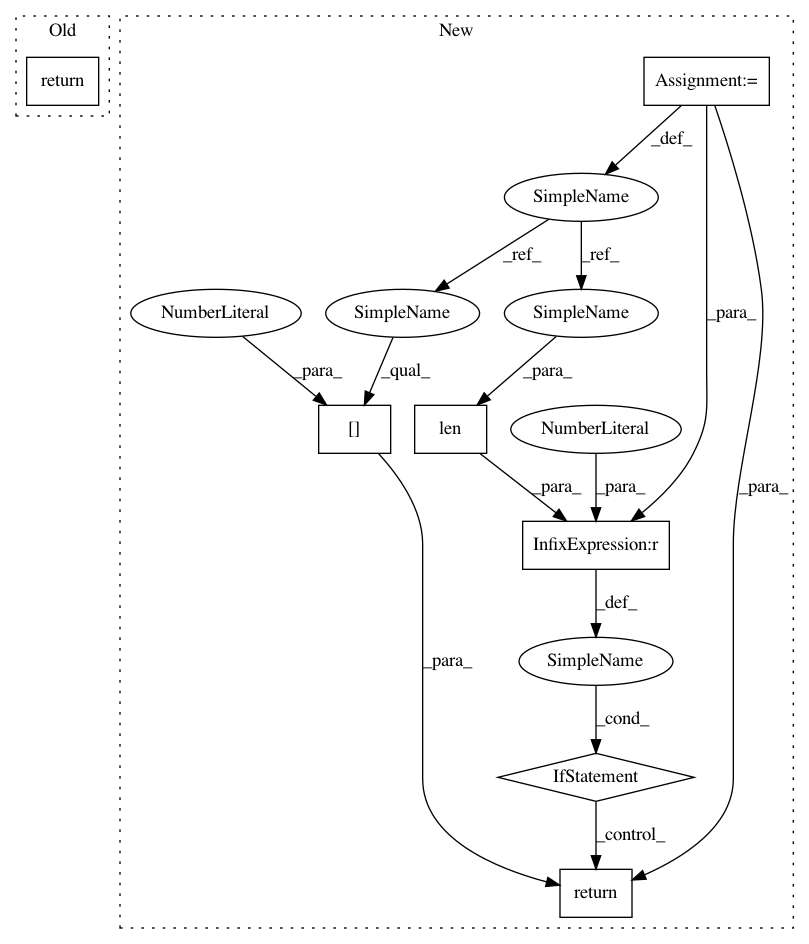

88420cc2658b3f3d0d228518ab0ce9ba4d663bdf,chainercv/utils/testing.py,StubLink,__call__,#StubLink#,59
Before Change
return chainer.Variable(
self.xp.asarray(self._get_array(self.shapes[0])))
else:
return tuple(
chainer.Variable(self.xp.asarray(self._get_array(shape)))
for shape in self.shapes)
After Change
tuple of :obj:`chainer.Variable`.
outputs = tuple(
chainer.Variable(self.xp.asarray(self._get_array(shape)))
for shape in self.shapes)
if len(outputs) == 1:
return outputs[0]
else:
return outputs
In pattern: SUPERPATTERN
Frequency: 3
Non-data size: 7
Instances
Project Name: chainer/chainercv
Commit Name: 88420cc2658b3f3d0d228518ab0ce9ba4d663bdf
Time: 2017-05-02
Author: Hakuyume@users.noreply.github.com
File Name: chainercv/utils/testing.py
Class Name: StubLink
Method Name: __call__
Project Name: deepchem/deepchem
Commit Name: ae9a19a067532643a499bda59cd5d56006eb50da
Time: 2020-07-29
Author: bharath@Bharaths-MBP.zyxel.com
File Name: deepchem/models/keras_model.py
Class Name: KerasModel
Method Name: fit_on_batch
Project Name: chainer/chainercv
Commit Name: 88420cc2658b3f3d0d228518ab0ce9ba4d663bdf
Time: 2017-05-02
Author: Hakuyume@users.noreply.github.com
File Name: chainercv/utils/testing.py
Class Name: StubLink
Method Name: __call__
Project Name: keras-team/keras
Commit Name: dc3c1488bb5a75af798cee7a81a46e454e17d85d
Time: 2016-04-01
Author: francois.chollet@gmail.com
File Name: keras/engine/topology.py
Class Name: Container
Method Name: get_output_shape_for